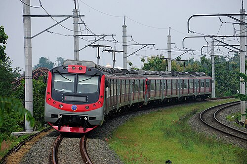
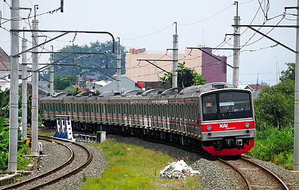
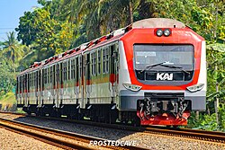
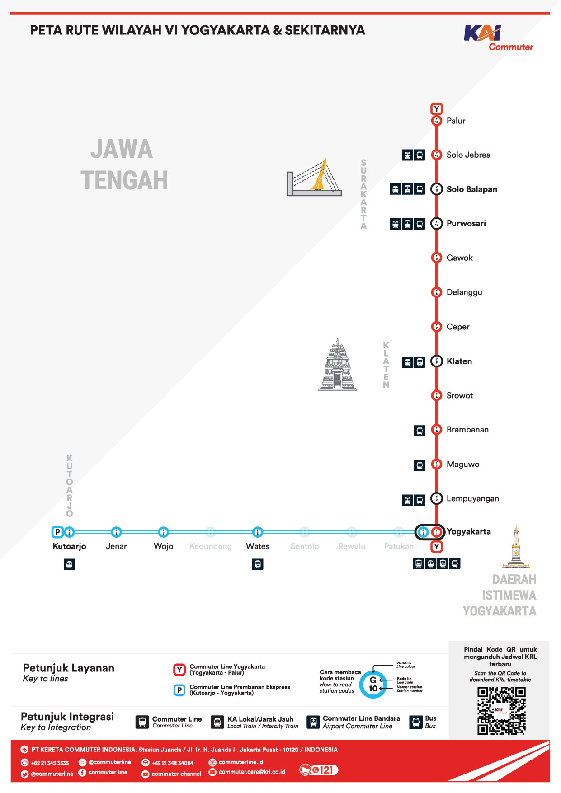

KRL (Kereta Rel Listrik) adalah kereta yang menghubungkan 2 kota antara Jogja dan Solo.
Jadwal KRL Jogja Solo tersedia di bawah ini:
Buka Jadwal PDF
Commuter line Prameks adalah kereta api yang menghubungkan antara stasiun Yogyakarta/Tugu dengan stasiun Kutoarjo.
Jadwal Commuter Line Prameks tersedia di bawah ini:
Buka Jadwal PDF